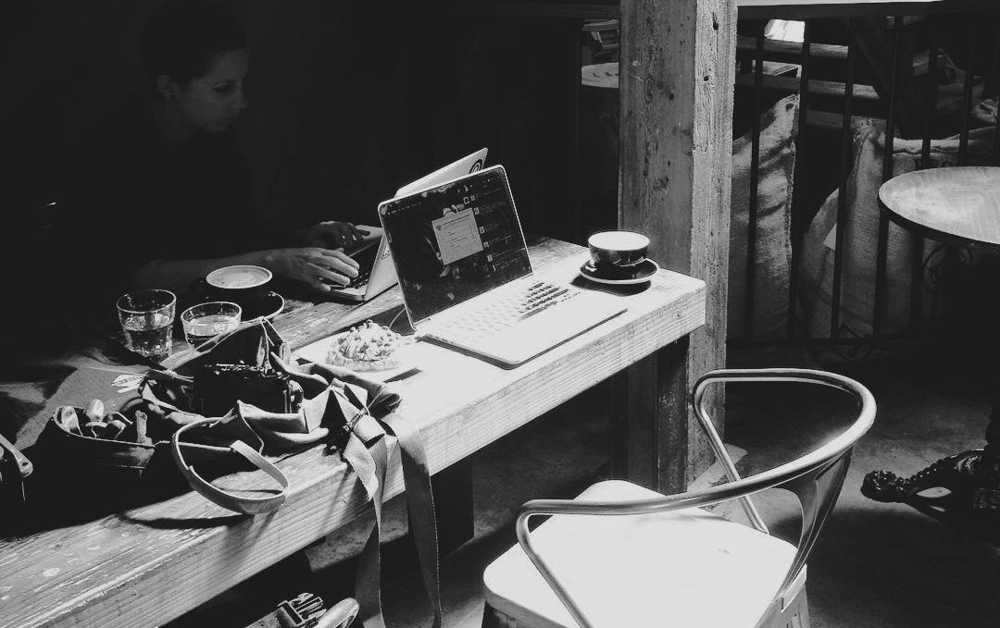
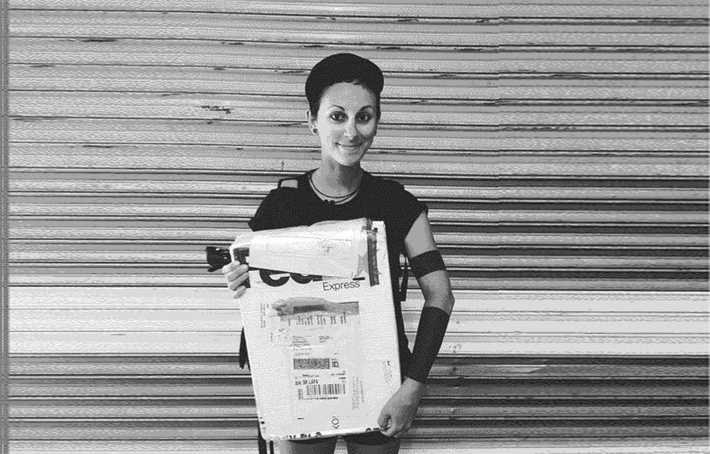
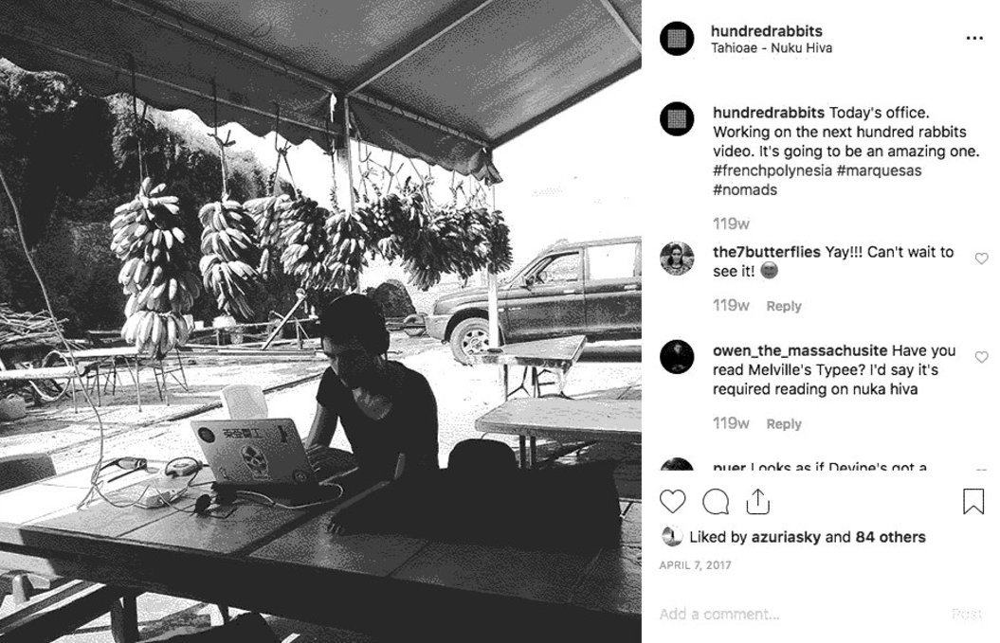
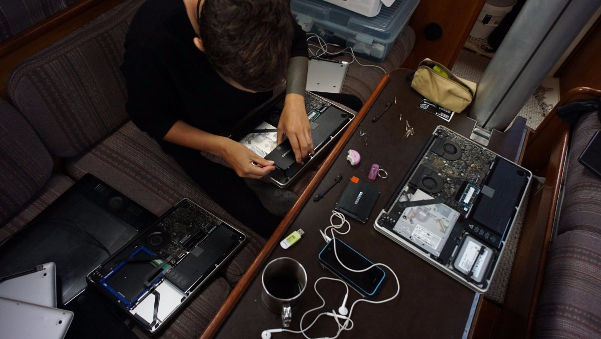
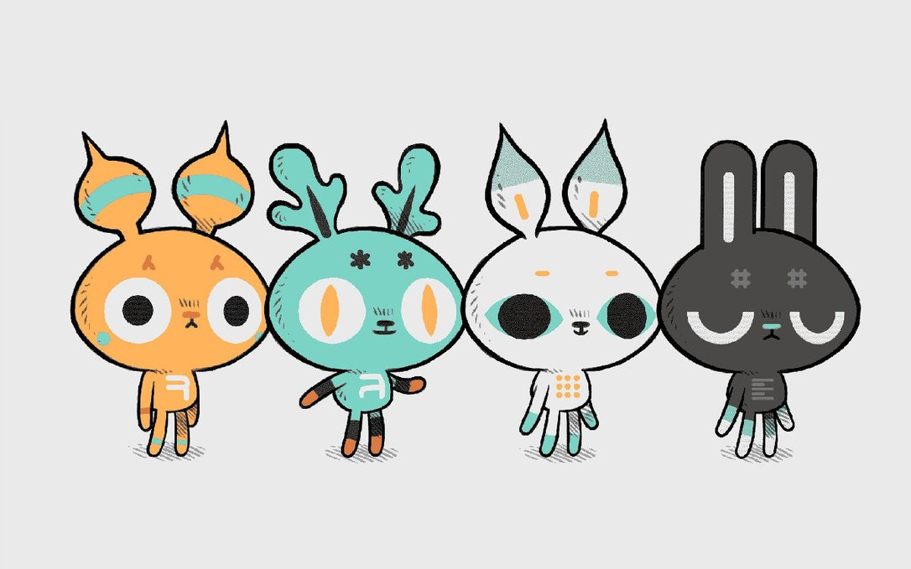

tools ecosystem
Tools Ecosystem
How did the Hundredrabbits ecosystem come into being? It's a long story, but here's a summary.
In 2016, we left Canada, armed with our two iPhones and 2 Macbooks Pros. We didn't know the wattage of the devices we owned, and even less about the amount of solar needed to power them. When living on land we didn't pay attention to how many amps our devices required daily. Electricity felt limitless.
When we started sailing in British Columbia we had no dinghy, and so we'd go from dock to dock. When we purchased Iggy in Nanaimo, we spent more days on the hook. The first anchorage we went to was a small bight east of Eagle Point, it offered a great view of metro Vancouver, and was our first taste of freedom. From that point on, we spent more and more time at anchor, moving every 5 days. We had no power concerns because our route always included docks. Our batteries were always topped up.
Life off the grid was new to us then, as was spending lots of time outdoors. We liked it a lot. When at anchor we'd go explore, spend a few hours working, cooking, then we'd read or play card games in the evenings. When living on land, we'd work from 0800-1900, sitting in front of our respective screens, but now we wanted to do less of that. We wanted to make time to take a long bike ride around the islands, or to sit on the deck in the evenings to watch the sun set. At a dock, where we had both power and internet, we'd go back to working longer hours to get things done. This was a fine setup, we thought, but there was one problem: what happens when we start living and working at anchor full time? We liked being outdoors, but that's not all we wanted to do. We liked making things. We were relying on powered docks to work, and so we never got to test our current power setup off-grid. If we had spent a month or so away from civilization, we would have learnt that we had to change something.
And so, to continue with the story, we left Canada and cruised down the US West Coast. True to our old habits, we continued to alternate between staying at a dock and at anchor. The longest we spent off-grid during that time was 3 weeks in San Francisco, anchored off Treasure Island. During that time we discovered that working aboard, running two Macbook Pros, a refrigerator, and our phones was not possible. To save on power, we started turning the fridge off at night, and taking trips into town during the day to work from cafes.
San Francisco was gray on most days, our solar couldn't keep up with our demanding work schedules. Going to work from cafes in town worked well for us, most had outlets we could use. Our routine started with working from cafes until lunch, then wandering around in the afternoons. We would return home before dark to turn the fridge off, but doing it didn't make sense because the constant shifts in temperatures produced too much moisture. Moisture meant rot and mold. We decided that keeping it off was a better idea for both our batteries, and our produce. With the fridge out of the equation, we figured that we'd have more power left-over for our laptops. We learned to live without it, and now we don't miss refrigeration at all.
We experienced an extended time at anchor again in San Diego, with Pino finding a cozy spot near Coronado island. All convenient anchorages were full because of the Baha Haha, an annual regatta of boats that sail down the coast to Mexico. Every day, we'd row our laptops into town to work. We stayed there for 2 weeks before making our way south across the border.
The sail was nice and short. We arrived near Ensenada in the dark with plans to anchor off Islas de Todos Santos, a set of offshore islands. Anchoring anywhere in the dark is foolish, we knew it when we did it the first time in San Luis Obispo, and again that day. As we neared our anchoring spot, shapes began to appear in the dark. They were annoying to us because our guide told us they weren't supposed to be there, important to note that our Charlie's Charts guide was from the 70's, and that even if landmasses don't move, human constructions spawn in and out of existence. The bay had aquaculture pens in it. Loads of them. This is something we would have seen had we looked at satellite images of the islands, but we didn't do this. We couldn't stay here, so we turned around and headed to Ensenada to find a place to anchor. We dropped anchor in another spot recommended by the ancient wisdom of Charlie's Charts.
We woke up the next morning with someone knocking on the hull. We climbed out, hair disheveled, to see who it was, and saw 3 men in a power boat bearing the word 'policía'. Written Spanish is not too hard to decipher for French speakers like us, but verbal Spanish is something else entirely. I caught bits of what they were trying to communicate to us, words like 'hora', which sounded like 'hours' which meant they were asking us about the time? What they were actually saying was 'ahora', meaning 'now', as in... we had to move now because a large cruise ship was coming, and we were anchored in its path.
We found a spot at Baja Naval, a marina with power on the dock. After spending 3 days there, we decided to book it for a month, so we could have time to work on projects. The timing was impeccable, because Rek's Macbook Pro started having logic board issues. We had few options for repair at the time, and we couldn't afford to replace it. We had a Chromebook aboard Pino, a laptop we bought to use as a media station. Since we were a laptop short, Devine decided to try and use ChromeOS for development. During this transition, Devine developed the first version of Ronin. I didn't have Photoshop to work with, but we wondered if we could fashion a replacement for it ourselves. Ambitious, we know. Our thinking was that we could only implement the features we needed. Devine used PS for simple photo manipulation like color correction, and I needed brush tools and layering. We didn't use most of the features included with the software, so building a lean graphics editor would be easy... right?
The early version of Ronin was functional, but it couldn't serve as a replacement for Photoshop, not yet. We still had too much to learn.
Using Gimp or Krita wasn't even in our radar at that point. We were both primarily artists, and weren't super familiar with linux either.
At this point, we were in trouble. A friend in San Francisco heard about our problems and sent us an old disused 17" Macbook. We couldn't believe it. I could use it while we worked at improving Ronin. This kind donation solved our problem.
We sailed around Baja California and over to La Paz in the Sea of Cortez. The marinas in La Paz, like the ones in San Diego, were full-up because of the same people. People sail down to Mexico, find a spot and stay there forever. We had no choice then, so we started to live at anchor full time. We anchored off La Paz in the main anchorage, a short dinghy ride away from shore. This new setup worked for a while, but my new-to-me laptop was a battery-draining vampire. We couldn't work from Pino. We had to go back to old habits, and seek help in the form of a coffee shop. This strategy worked in most places we'd been so far, but in La Paz, we found no cafe with both outlets and internet. We needed both to work, my hungry Macbook demanded it. To offer our solar panels some relief, we got a gas generator (later sold in early 2023). Not the greenest of options, but it was the only way we'd found to keep working aboard Pino. Also, we figured it could be handy if ever we needed to use power tools at anchor. The power we could get from solar, our gas generator, and our engine's alternator worked for us. We'd sail to far away anchorages in Mexico and could stay working there for days and days without worry. The only reason we'd go back to town was to get food.
tools ecosystem
It is a set of tools that we made, and that we use on a daily basis to do art, music and writing.
- Orca, an experimental live-coding environment.
- Dotgrid, a simple vector line tool
- Left, a simple minimalist text editor.
- Ronin, a graphic design terminal
As months passed, we experienced frequent failures with our hardware. Most times, I could not charge my laptop up to full battery, which means that it drew a lot of power all the time. On a laptop the last few percentage points are much lower wattage to float/top it off, but, I never got there with my Mac. To add to our growing list of difficulties, our resident vampire's battery stopped holding a charge. We couldn't use it.
When we arrived in French Polynesia, our problems only worsened. Our house batteries and solar couldn't keep up with the combined thirst of our computers. I could only use my computer when the sun was highest in the sky, for short periods of time. It proved to be impractical. We couldn't use Photoshop or Xcode, two softwares we needed to make our games. Our generator was a big help, but we didn't want to run it all the time. We used it every couple of days, ignoring the sound, smell and vibration. Not an ideal situation.
In Nuku Hiva we had no internet on the boat. If we wanted to do anything online, we had to take Iggy to shore to work from an outdoor cafe. This place had bananas hanging from the ceiling, the air was thick with flies and the floor was covered in sleeping hounds. The internet connection was slow, faster in the morning when there were less people around using it, but still damned slow. One morning Devine was sitting at the cafe, struggling to update Xcode again. Discouraged. Across the table sat another person, another demoralized soul. This was Herbert.
Herbert, sweat at his brow, glared at the screen of his laptop. Devine sat across from him, beads of sweat trickling down as the speed of the internet slowed to a painful crawl. They sat there together, unaware that they shared a problem. Herbert, was a developer/sailor too, and was trying to download the same updates to Xcode. Both bonded over this struggle, which persisted throughout the South Pacific.
Making apps and games from an island in the Marquesas sounds idyllic. It's easy to imagine a developer smiling, one hand on the keyboard and the other holding a perspiring glass of pamplemousse juice, so pleased with their choices. In truth, the developer can't enjoy their pamplemousse juice because they're too busy swearing at faraway bodies in Silicon Valley who think 11 G software updates are perfectly reasonable.
We remember thinking then that our idea to work and travel was silly, impossible even, but we didn't give up. We had to find a way to continue to make things.
One night in Tahiti, we were sitting on deck, watching the Island of Moorea in the distance. We talked about expectations versus reality, and made a list of things we could improve on. Rek wasn't working much, due to their laptop's faulty battery, but this wasn't all bad... it allowed for more swimming, and to dive back into former interests, like writing. Rek began to write more during that time, using the Chromebook because it was low-power. The Chromebook only had Caret as a writing tool, which Rek was fine with, but Devine wasn't having it. The next day, they were hard at work making a writing tool, something basic. The more Rek was writing, the more we improved it. Overtime, we added a synonyms dictionary, auto-complete and many other basic features, while keeping it lean. This was our writing tool Left.
When we arrived in New Zealand, even if we were near a big city, with resources, we still didn't have access to power. We would have to continue to rely completely on solar. We invested in some Raspberry Pi hardware, to replace the ChromeBook. Our new Pi setup was low-power and low-cost, perfect for writing. Rek decided to no longer use the 17' Macbook, even with a replacement 3rd-party battery (which also failed us later on). The device was still a crazy power-hungry beast. We couldn't use devices like that on Pino, not anymore. It was at that time that we received yet another disused Macbook to add to our growing collection. This 2010 model was less power-demanding, and would help Rek keep working (Rek is still using it today, in 2023).
We knew then already, that we didn't want to buy a new-anything from Apple ever again. Combining parts to create a good-working computer was, at the time, our only viable option. We would keep using these laptops, repairing them anyway we can until we could find them suitable homes. An estimated 130,000 computers end up in the garbage annually, we didn't want to add to those statistics. Greenhouse emissions in production are far higher than from several years worth of usage by customers. This is why we've been holding off on purchasing new devices (in an attempt at reducing our broader environmental impact). In today's climate, it is far better to re-use, than to buy. After these events, we became aware — and concerned — over our power consumption. Just like how we calculate our water intake with a foot pump (1/4 cup per push), we would start to monitor our power usage, and to try and find ways to lessen it. This was beneficial to the environment, but also, our situation required it. With limitations comes creativity.
We too, began talking about our vision of the future, about what working on Pino could be like if we could lessen our dependence on software and hardware we couldn't fix ourselves.
As we pushed further and further west with Pino, we accumulated both miles and problems, strengthening our desire to be self-sufficient.
Another downside we discovered was that many tools and operating software need to call home eventually. It isn't uncommon for an iPhone to lock up, due to a prolonged period of no-internet. Many sailors we met also had that same problem. It's dangerous. Especially considering that many, like us, navigate using their phones. It's how we get our weather and communicate with others. We can view messages and weather downloaded with the satellite phone via an app on our cellphones.
We had a clear view of what we wanted then.
We had to adapt, to change our workflow. One big decision was to scale our projects to the amount of energy we had available on the boat, we wrote about this in our article working offgrid efficiently. This translates to shorter work hours, smaller projects (like Thousand Rooms, music etc) and making our own tools.
We began building software designed to work offline, to use as little power as possible and that is good at doing its own task. This, recently, has evolved into rebuilding our websites in C, a language that is more resilient, lightweight(tcc) and available on older platforms. We're also learning Assembly, with the hope of making our games playable on older hardware like Donsol on the classic Nintendo.
All in all, we want everything we do to be open-source, so that if something breaks, we can easily fix it.
In an ideal world, we'd also have devices of our own design which follow these same rules. For now though, re-using old existing hardware is a good solution. We are thinking about this a lot, but this requires more resources and planning. This is an insight of what we have planned for the future!
Update. In December 2022, we released weathering software winter, which is a good follow-up read to this text. Now, as an attempt to preserve data, and to strip our project of most dependencies to make them more resilient, our tools and games(not all) are now hosted on a little personal computing stack we made called uxn. Rek now mainly draws by hand, and uses Gimp to process digital art and photos. We both use linux (Manjaro), and still work from old donated laptops (see setup). Devine writes all code in Left, draws in Noodle, and we make sprites for our projects using Nasu. uxn was created primarily for us, so we could have tools that meet our exact needs. In all, we encourage everyone to consider making their own software, or their own programming language, rather than using ours. Resilience is diversity.
Enjoy this concept of these rabbit-like characters that Rek designed to personify each tool! You'll be seeing a lot more of these guys around~